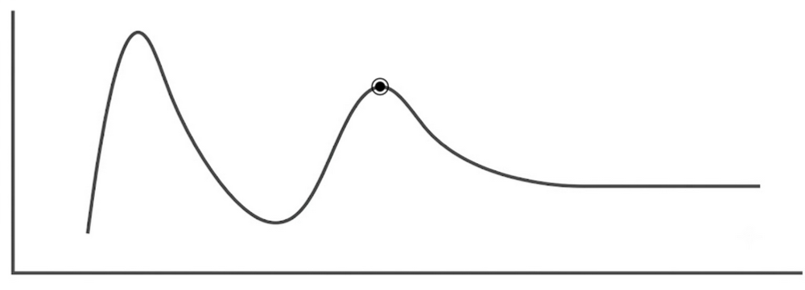
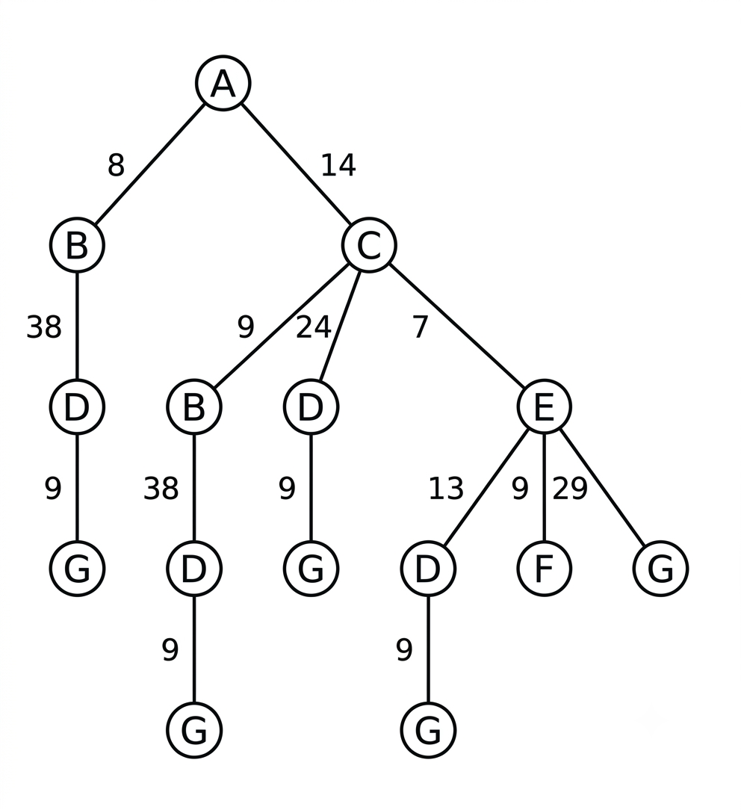
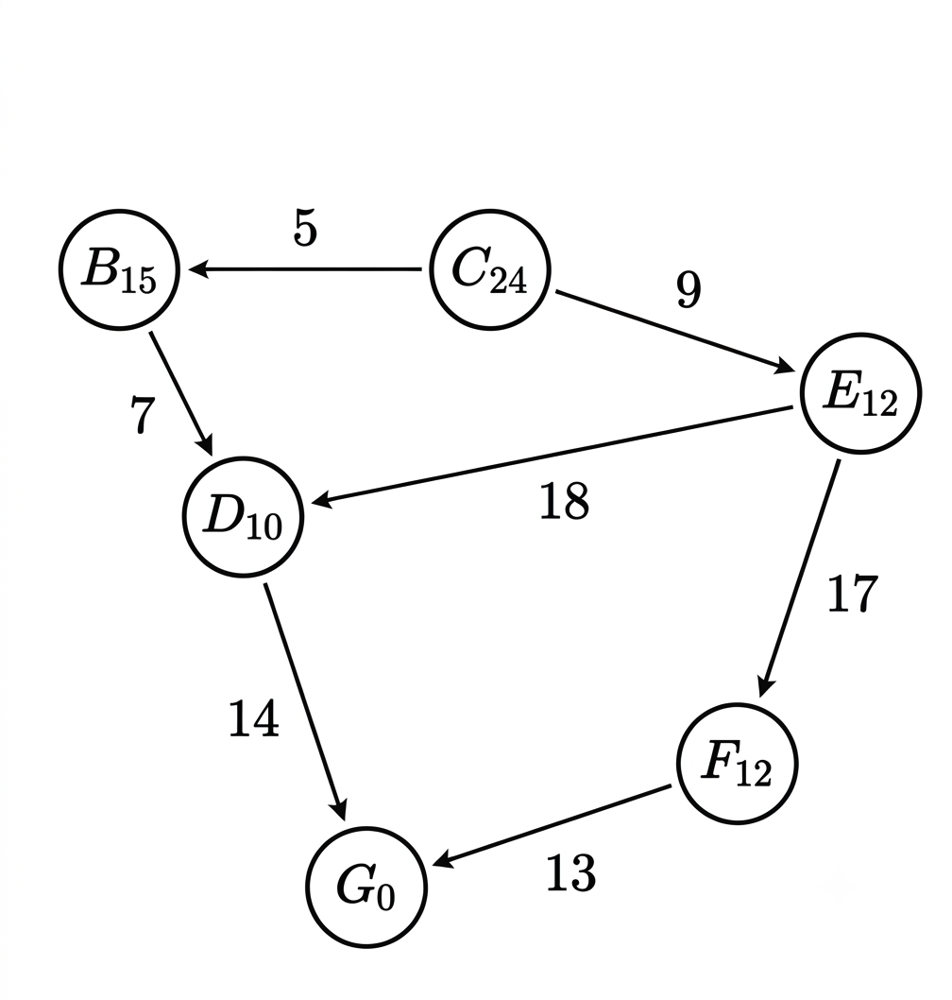
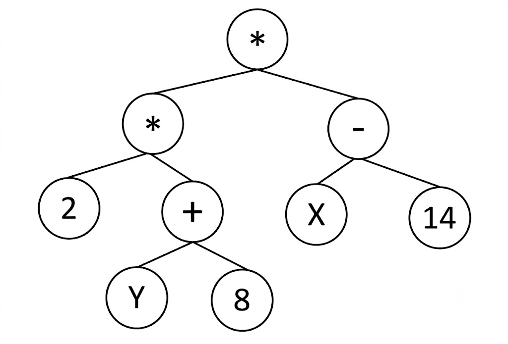

Resolución de Ejercicios
Desglose paso a paso de problemas reales de convocatorias anteriores.
📊 1. CLASIFICACIÓN DE EJERCICIOS
Tras diseccionar los ejercicios oficiales, los problemas prácticos de Sistemas Inteligentes se dividen en 9 grandes tipos.
Tipo A: Traza de algoritmo de búsqueda sobre grafo
Qué se pide:
Para A* en grafo, se descarta la reapertura de nodos cerrados aunque se encuentre un camino mejor (si la heurística no es consistente). El camino óptimo de A* ≠ camino de avara.
Tipo B: Verificación de admisibilidad y consistencia
Qué se pide:
Basta encontrar UNA arista que viole la desigualdad para demostrar inconsistencia. La admisibilidad se viola si para algún nodo h(n) > coste real al destino.
Tipo C: Identificación de algoritmo por tabla de explorados
Qué se pide:
UCS puede dar la misma secuencia que BFS si todos los costes son iguales. La diferencia está en si extrae por coste o por orden de inserción.
Tipo D: Encadenamiento progresivo con reglas
Qué se pide:
El orden de aplicación importa: si dos reglas se activan simultáneamente, se aplica la de mayor prioridad. Los hechos nuevos activan reglas que antes no disparaban.
Tipo E: Construcción de BLE y BLR + Inferencia
Qué se pide:
Una regla 'A → B' falla SOLAMENTE cuando A=1 y B=0. Si A=0, la regla se cumple automáticamente independientemente de B. La BLR puede quedar vacía.
Tipo F: Corrección bayesiana sobre BLR
Qué se pide:
Cuando el modelo categórico deja solo una interpretación posible, aplicar Bayes es inútil: la respuesta ya está determinada por exclusión.
Tipo G: Tamaño BLE/BLR y espacio de estados
Qué se pide:
El tamaño de la BLE no es M×I sino 2^M × 2^I (todas las combinaciones binarias posibles).
Tipo H: Probabilidad en Computación Evolutiva (AG)
Qué se pide:
La tasa de mutación es por individuo, no por gen. Si Pm=0.1 y hay 1000 individuos, se esperan 100 mutados.
Tipo I: Análisis de árbol de Programación Genética
Qué se pide:
Los terminales son las HOJAS (tanto variables como constantes). Los no terminales son siempre los OPERADORES. La profundidad suele contarse desde nivel 0 o 1.
🛠️ 2. MÉTODO GENERAL DE RESOLUCIÓN (Recetas)
Receta A: Traza de búsqueda sobre grafo
Inicializar: Añadir el nodo origen a la frontera (cola de prioridad) con su coste inicial.
Extraer: Sacar de la frontera el nodo con el menor valor según la función de evaluación del algoritmo.
Expandir: Generar los sucesores del nodo extraído y calcular sus nuevos costes.
Meta: Comprobar si el nodo extraído es el objetivo. Si lo es, termina la ejecución.
Registrar: Añadir el nodo explorado a la lista de cerrados y meter los sucesores en la frontera.
Receta B: Verificación de admisibilidad y consistencia
Admisibilidad: Comprueba que $h(n)$ nunca sobrestime el coste real al objetivo.
Consistencia: Verifica la desigualdad triangular para cada arista del grafo:
Una sola arista que lo viole → NO consistente.
Conclusión: Si es consistente, automáticamente es admisible (pero no al revés).
Receta C: Identificación de algoritmo por traza
¿Va nivel a nivel en orden alfabético? Suele ser indicativo de Búsqueda en Anchura (BFS).
¿El orden sigue el menor coste g acumulado? Corresponde a Coste Uniforme (UCS).
¿Se sumerge siempre en la rama más profunda? Estás ante una Búsqueda en Profundidad (DFS).
Receta D: Encadenamiento progresivo (Forward Chaining)
Estado inicial: Carga los hechos conocidos en la Memoria Activa (MA).
Emparejamiento: Busca qué reglas tienen sus premisas satisfechas con los hechos de la MA.
Resolución de conflicto: Si hay varias reglas activas, aplica el criterio de desempate (orden alfabético, novedad, etc.).
Acción: Dispara la regla ganadora y añade su consecuente a la MA.
Receta E: Construcción de BLE y BLR
BLE (Base Lógica Expandida): Es tu tabla de verdad gigante. Construye todas las combinaciones binarias posibles (0 y 1) de Manifestaciones (M) e Interpretaciones (I).
Aplicar reglas (Eliminar filas): Las reglas del dominio son las "leyes de la física" de tu sistema. Revisa la tabla gigante fila por fila y tacha por completo las filas que rompan estas leyes.
A → B SÓLO se rompe (y por tanto tachas la fila) cuando la condición ocurre (A=1) pero la consecuencia no (B=0). En cualquier otro caso (por ejemplo, si A=0), la regla se salva automáticamente y no tachas nada.BLR (Base Lógica Reducida): El grupito de filas que ha sobrevivido a la criba anterior constituye tu BLR. Éstos representan los únicos escenarios lógicamente posibles que pueden darse en el mundo real sin generar contradicciones.
Inferencia (Aplicar la evidencia): Cuando llega una evidencia empírica indiscutible (ej. "Observamos que M1=1"), vas a tu BLR y tachas las filas donde M1=0. Los valores de las Interpretaciones (I) de las filas que queden vivas al final serán tu deducción o diagnóstico lógico.
Receta F: Corrección bayesiana
Filtro previo (BLR): Antes de calcular nada, comprueba qué interpretaciones son lógicamente posibles en la Base de Reglas. Si solo queda viva UNA interpretación, su probabilidad es del 100% por descarte (no apliques Bayes).
Verosimilitud $P(Evidencia \mid I_k)$: Multiplica las probabilidades de las manifestaciones que componen la evidencia empírica observada. Si la manifestación ocurre (1), usas su probabilidad dada en el enunciado. Si NO ocurre (0), usas su opuesto.
Probabilidad Conjunta (Numerador): Multiplica el resultado de la verosimilitud (paso 2) por la probabilidad a priori de esa interpretación.
Normalizar (Probabilidad Final): Para hallar la probabilidad definitiva de una interpretación, simplemente divide su valor Conjunto entre la suma de los valores conjuntos de todas las interpretaciones que compiten.
Receta G: Tamaño BLE y espacio de estados
Tamaño BLE
Espacio de estados STRIPS
Complejos BLR: Los que quedan tras aplicar las reglas.
Receta H: Análisis Visual de Búsqueda Local
Evaluar Vecinos: El algoritmo solo "ve" las soluciones adyacentes inmediatas al estado actual.
Tomar Decisión: Se mueve hacia el vecino que mejora (o maximiza/minimiza) más rápidamente el valor heurístico.
Condición de Parada: Termina cuando ningún vecino mejora el estado actual.
Receta I: Análisis de árbol GP
Terminales (hojas): Son siempre los operandos (constantes numéricas o variables de entrada).
No terminales (operadores): Son siempre los nodos internos del árbol (funciones, +, -, *, AND, etc.).
Profundidad: Cuenta el número de aristas (o niveles) desde la raíz hasta la hoja más profunda.
Equilibrio: Evalúa la distribución de los subárboles para comprobar si es un individuo sintácticamente válido.
📝 3. RESOLUCIÓN DE EJERCICIOS PRÁCTICOS
Tema 2: Búsqueda y Exploración
Ejercicio 1. A* sobre grafo1

Aplicando el algoritmo A* basado en grafo, en algún paso, los nodos de la frontera vendrán dispuestos según la siguiente configuración (considerar precedencia izq a drch, que el número entre paréntesis representa el correspondiente valor f, f = h + g, y que en caso de empate en valor f, la precedencia de expansión vendrá dada por el orden alfabético de los nodos correspondientes):
El recorrido paso a paso es:
- Paso 0: Estado Inicial: frontera =
[A(f=25)]. Cerrados = []. - Paso 1: Se expande el nodo A. Sus sucesores son B (g=4, h=23 ⇒ f=27), C (g=2, h=20 ⇒ f=22) y D (g=6, h=21 ⇒ f=27).
La frontera queda como:
[C(22), B(27), D(27)]. Cerrados = [A]. - Paso 2: Expandimos C (menor f=22). Sus sucesores son G (g=2+20=22, h=0 ⇒ f=22).
La frontera queda como:
[G(22), B(27), D(27)]. Cerrados = [A, C].
Ejercicio 2. Búsqueda Avara sobre Grafo 1
Trazando la ruta desde A:
- Paso 1: Desde A, evaluamos la heurística de sus vecinos: h(C)=20, h(D)=21, h(B)=23. El menor es C (h=20). Nos movemos a C.
- Paso 2: Desde C, el único sucesor es G (meta) con h(G)=0. Nos movemos a G.
La secuencia del camino devuelto es:
A → C → G.
Ejercicio 3. Optimidad de A* sobre Grafo 1
- Admisibilidad: Evaluemos el nodo origen A. Su valor heurístico es h(A) = 25. Sin embargo, si miramos el grafo, existe un camino real A → C → G cuyo coste exacto es c(A,C) + c(C,G) = 2 + 20 = 22. Como h(A) > h*(A) (25 > 22), la heurística sobreestima el coste real hacia la meta. Por tanto, NO es admisible.
- Consistencia: Revisemos la arista de A a C. La desigualdad triangular exige que h(A) ≤ c(A,C) + h(C). Sustituyendo: 25 ≤ 2 + 20 ⇒ 25 ≤ 22, lo cual es falso. La heurística NO es consistente.
Conclusión: Al no ser admisible ni consistente, el algoritmo A* no garantiza encontrar la solución óptima (aunque por el diseño particular de este grafo A* termine llegando a ella, a nivel matemático y algorítmico no es una garantía).
Ejercicio 4. A* sobre grafo2 - Búsqueda A*

- Paso 1: Cola =
[C(f=16), B(f=55)]- Paso 2: Cola =
[F(f=16), G(f=17), B(f=55)]- Paso 3: G actualiza la entrada al ser menor que 17. Cola =
[G(f=13), B(f=55)]- Paso 4: Cola =
[I(f=35), B(f=55)]. Se encuentra la meta I con coste 35.
Ejercicio 5. A* e IDS sobre grafo2 - Profundidad Iterativa (IDS)
- Límite 0: Solo se evalúa el nodo inicial A. No es meta.
- Límite 1: Se expande hasta profundidad 1: caminos A → B y A → C. No se alcanza la meta.
- Límite 2: Se expande hasta profundidad 2. Con orden alfabético: expandimos la rama izquierda de B: A → B → D y A → B → E; luego la rama de C: A → C → F y A → C → G. No se alcanza la meta.
- Límite 3: Se expande hasta profundidad 3. Siguiendo el orden lexicográfico de las ramas:
1. A → B → D → H (profundidad 3, hoja).
2. A → B → E → G
3. A → B → E → I (meta encontrada a profundidad 3).
La solución devuelta es el camino:
A → B → E → I.
Ejercicio 6. A* e IDS sobre grafo2 - Propiedades de la Heurística
1. Admisibilidad: Exige que h(n) ≤ h*(n) (no sobreestimar el coste real hacia la meta). El coste real de la ruta óptima de A a la meta I es 17 (A → C → G → I). Dado que h(A) = 15 y 15 ≤ 17, se cumple. Comprobando para todos los demás nodos, ninguno tiene una heurística mayor al coste real óptimo. Por tanto, la heurística es admisible.
2. Consistencia (Monotonía): Exige que h(n) ≤ c(n, n') + h(n') para todo par de nodos conectados. Evaluemos la arista de C a G (c(C,G)=3):
h(C) ≤ c(C,G) + h(G) ⇒ 16 ≤ 3 + 10 ⇒ 16 ≤ 13, lo cual es falso.
Por tanto, la heurística es admisible pero NO es consistente.
Ejercicio 7. A* sobre grafo3 - Búsqueda A*

1. Expandimos A. Sus sucesores son B (f=1+5=6) y C (f=1+3=4).
2. El menor es C. Lo expandimos y obtenemos F (f=2+6=8) y G (f=2+8=10).
3. La frontera tiene a B(6), F(8) y G(10). El menor es B...
El camino trazado por A* es indiscutiblemente
A → C → F → J → K.
Ejercicio 8. A* sobre grafo3 - Profundidad Iterativa (IDS)
- Límite 0: Solo A.
- Límite 1: Caminos A → B, A → C.
- Límite 2: Caminos A → B → D, A → B → E, A → C → F, A → C → G.
- Límite 3: Caminos A → B → D → H, A → B → E → I, A → C → F → J.
- Límite 4: Caminos hasta profundidad 4. Por orden alfabético, la rama izquierda no tiene salida, por lo que la búsqueda desciende por la rama de C: A → C → F → J → K (meta encontrada).
La solución devuelta es:
A → C → F → J → K.
Ejercicio 9. A* sobre grafo3 - Expansiones de un Nodo
En este grafo, el nodo B es extraído de la frontera por tener el menor valor f(B)=6 (frente a F(8) y G(10)) y se expande en el paso 3. Tras esta acción, pasa permanentemente a la lista de cerrados. Al no requerir reapertura de nodos en cerrados (re-opening) debido a que no se encuentra ninguna ruta más corta posterior, el nodo B es expandido exactamente 1 vez.
Ejercicio 10. Identificación de algoritmo por traza
En profundidad (LIFO), jamás verías los explorados en orden de capas. En A* o Coste Uniforme (UCS), la frontera se ordena por los costes numéricos, dando saltos ilógicos a la vista alfabética.
Ejercicio 11. Hill-Climbing sobre Árbol M-ario

La característica teórica definitoria de esta familia es que no conservan ni generan un "árbol de búsqueda" en memoria. Por lo tanto, es algorítmica y estructuralmente imposible que Hill-Climbing forme un árbol como el de la imagen.
Ejercicio 12. Análisis Visual de Búsqueda Local (Hill-Climbing)

Si estamos en el punto marcado, ¿qué deberíamos de hacer?En la gráfica, el punto marcado es un Máximo Local. Al evaluar a sus vecinos, el algoritmo ve que si da un paso a la izquierda, el valor baja; si da un paso a la derecha, el valor también baja. Como ningún vecino mejora su situación actual, la condición de parada algorítmica se dispara de inmediato: la máquina asume que ha llegado a la cima absoluta del problema, se detiene y devuelve el punto marcado como su solución final (quedando atrapado sin poder retroceder al carecer de memoria).
Ejercicio 13. Búsqueda Local (Hill-Climbing) iniciada en Valle
Sin embargo, su trampa principal es que, al carecer de memoria, subirá por la ladera de la montaña y se quedará atrapado en el primer máximo local que encuentre a lo largo de esa pendiente, sin poder explorar el resto del espacio.
Ejercicio 14. Búsqueda en Anchura (BFS) - Nodos en lista de explorados

- Estado Inicial (Paso 0): Frontera = `[A]`, Cerrados = `[]`
- Paso 1: Expandimos A. Frontera = `[B, C, D]`. Cerrados = `[A]` (1 nodo).
- Paso 2: Expandimos B (primer sucesor de A). Sucesores de B son E y F. Frontera = `[C, D, E, F]`. Cerrados = `[A, B]` (2 nodos).
- Paso 3: Expandimos C (siguiente en el nivel 1). Sucesores de C son G e H. Frontera = `[D, E, F, G, H]`. Cerrados = `[A, B, C]` (3 nodos).
- Paso 4: Expandimos D (último en el nivel 1). Al llegar a este paso, el algoritmo ha completado y cerrado la evaluación de 3 nodos (A, B y C). Por tanto, la lista de explorados (cerrados) contendrá exactamente 3 elementos.
Ejercicio 15. Búsqueda de Coste Uniforme (UCS) - Nodos en lista de explorados
- Estado Inicial (Paso 0): Frontera = `[A(g=0)]`, Cerrados = `[]`
- Paso 1: Se extrae y expande A (coste 0). Sus sucesores entran en la frontera: Frontera = `[B(g=2), C(g=4), D(g=8)]` (los pesos de las aristas son A → B = 2, A → C = 4, A → D = 8). Cerrados = `[A]` (1 nodo).
- Paso 2: Extraemos B de la frontera por tener el menor coste acumulado (g=2). Sus sucesores son E y F (costes acumulados g(E)=2+3=5 y g(F)=2+4=6$). Frontera = `[C(g=4), E(g=5), F(g=6), D(g=8)]`. Cerrados = `[A, B]` (2 nodos).
Al concluir la expansión del paso 2, el algoritmo ya ha retirado de su frontera y finalizado la evaluación de 2 nodos (A y B). Por lo tanto, la lista de explorados contiene exactamente 2 elementos.
Ejercicio 16. Búsqueda en Profundidad (DFS) - Nodos en la frontera
- Inicial: Frontera = `[A]` (Tamaño: 1)
- Paso 1: Expandimos A. Sucesores son B, C y D. Entran en la pila (con prioridad lexicográfica, de derecha a izquierda para extraer primero la B): Frontera = `[D, C, B]` (Tamaño: 3). Explorados = `[A]` (1)
- Paso 2: Expandimos B. Sucesores de B son E y F. Entran en la pila: Frontera = `[D, C, F, E]` (Tamaño: 4). Explorados = `[A, B]` (2)
- Paso 3: Expandimos E. Sucesores de E son K y L (hojas). Entran en la pila: Frontera = `[D, C, F, L, K]` (Tamaño: 5). Explorados = `[A, B, E]` (3)
- Paso 4: Extraemos K. Dado que es una hoja (no tiene descendientes), no se añaden sucesores. Queda en cerrados. Frontera = `[D, C, F, L]` (Tamaño: 4). Explorados = `[A, B, E, K]` (4).
Al llegar al paso 4 (tras expandir y vaciar K), la frontera contiene exactamente 5 nodos (los acumulados en espera en la pila LIFO, que son D, C, F, L, K antes de remover K).
Ejercicio 17. Búsqueda A* - Nodos máximos en frontera

- Inicial: Frontera = `[C(f=24)]` (Tamaño: 1)
- Paso 1 (Expandir C): Sucesores son B (g=4, h=16 ⇒ f=20) y E (g=7, h=14 ⇒ f=21). Frontera = `[B(f=20), E(f=21)]` (Tamaño: 2)
- Paso 2 (Expandir B): Sucesores son D (g=4+8=12, h=10 ⇒ f=22). Frontera = `[E(f=21), D(f=22)]` (Tamaño: 2)
- Paso 3 (Expandir E): Sucesores son D (peor camino, se ignora) y F (g=7+25=32, h=6 ⇒ f=38). Frontera = `[D(f=22), F(f=38)]` (Tamaño: 2)
- Paso 4 (Expandir D): Sucesores son G (g=12+14=26, h=0 ⇒ f=26). Frontera = `[G(f=26), F(f=38)]` (Tamaño: 2)
- Paso 5 (Expandir G): Llegamos al objetivo.
El tamaño máximo de la frontera en todo momento de la ejecución es de 2 nodos.
Ejercicio 18. Búsqueda A* - Peso óptimo de la solución
- Camino óptimo devuelto:
C → B → D → G.- Transiciones:
- c(C,B) = 4
- c(B,D) = 8
- c(D,G) = 14
- Coste real total: 4 + 8 + 14 = 26.
Por lo tanto, el coste real (peso óptimo) de la solución es 26.
Tema 3: Representación del Conocimiento
Ejercicio 19. Encadenamiento en Sistema de Producción
R1: IF (X AND Y) THEN ZR2: IF (C OR D) THEN GR3: IF (E AND V) THEN HR4: IF (A AND B) THEN CR5: IF (F OR G) THEN XR6: IF (Z AND B) THEN VR7: IF (E AND C) THEN FQueremos inferir
H mediante encadenamiento progresivo (hacia adelante), utilizando como criterio de resolución de conflictos: "ejecutar la regla que ha sido activada en primer lugar" (orden de base de reglas: R1 a R7). Sabiendo que en la memoria activa inicial tenemos A, B, D e Y, ¿cuál será la secuencia de reglas activadas y ejecutadas?
- Memoria activa inicial (MA):
{A, B, D, Y}- Ciclo 1: Evaluamos de R1 a R7. Se activan R2 (pues D está en MA) y R4 (pues A y B están en MA). Criterio de resolución: disparamos la primera en la base, que es R2.
- Efecto: Añadimos
G a la memoria. MA = {A, B, D, Y, G}. Reglas disparadas: [R2].- Ciclo 2: Evaluamos de nuevo. Se activan R4 (A y B) y R5 (pues G está en MA). Disparamos la primera disponible: R4.
- Efecto: Añadimos
C a la memoria. MA = {A, B, D, Y, G, C}. Reglas disparadas: [R2, R4].- Ciclo 3: Se activa R5.
- Efecto: Añadimos
X a la memoria. MA = {A, B, D, Y, G, C, X}. Reglas disparadas: [R2, R4, R5].- Ciclo 4: Se activa R1 (pues X e Y están en MA).
- Efecto: Añadimos
Z a la memoria. MA = {A, B, D, Y, G, C, X, Z}. Reglas disparadas: [R2, R4, R5, R1].- Ciclo 5: Se activa R6 (pues Z y B están en MA).
- Efecto: Añadimos
V a la memoria. MA = {A, B, D, Y, G, C, X, Z, V}. Reglas disparadas: [R2, R4, R5, R1, R6].La secuencia de reglas disparadas es R2, R4, R5, R1, R6. En este punto no podemos avanzar a H porque nos falta el hecho E.
Ejercicio 20. Encadenamiento en Sistema de Producción (Variante)
- MA inicial:
{A, B, D, Y} (tiempo base t=0).- Ciclo 1: Se activan R2 y R4. Ambas consumen hechos de tiempo t=0. Se desempata por orden de base de reglas: disparamos R2.
- Efecto: Añadimos
G en t=1. MA = {A, B, D, Y, G(1)}.- Ciclo 2: Se activan R4 (hechos en t=0) y R5 (consume G, que tiene t=1). Por novedad, disparamos R5 por encima de R4.
- Efecto: Añadimos
X en t=2. MA = {A, B, D, Y, G(1), X(2)}.- Ciclo 3: Se activa R1 (consume X en t=2 e Y en t=0). La otra activa sigue siendo R4 (t=0). Disparamos R1.
- Efecto: Añadimos
Z en t=3. MA = {A, B, D, Y, G(1), X(2), Z(3)}.- Ciclo 4: Se activan R6 (consume Z en t=3) y R4. Disparamos R6.
- Efecto: Añadimos
V en t=4. MA = {A, B, D, Y, G(1), X(2), Z(3), V(4)}.- Ciclo 5: Ya no hay reglas que se puedan activar con hechos recientes que no hayan sido disparadas. La única que queda es R4 (t=0). La disparamos.
- Efecto: Añadimos
C en t=5. MA = {..., C(5)}.La secuencia de reglas disparadas bajo este criterio cambia drásticamente a: R2, R5, R1, R6, R4.
Ejercicio 21. Encadenamiento Progresivo (Memoria Alternativa)
A, B, E e Y (en vez de D)? Indica la secuencia de disparo utilizando el orden clásico (R1 a R7).
{A, B, E, Y}- Ciclo 1: Evaluamos de R1 a R7. Se activa únicamente R4 (A y B). La disparamos.
- Efecto: Añadimos
C a la memoria. MA = {A, B, E, Y, C}.- Ciclo 2: Se activa R2 (C está en MA) y R7 (E y C). Disparamos la primera de la lista: R2.
- Efecto: Añadimos
G. MA = {A, B, E, Y, C, G}.- Ciclo 3: Se activa R5 (G) y R7. Disparamos la primera: R5.
- Efecto: Añadimos
X. MA = {A, B, E, Y, C, G, X}.- Ciclo 4: Se activa R1 (X e Y) y R7. Disparamos R1.
- Efecto: Añadimos
Z. MA = {..., Z}.- Ciclo 5: Se activa R6 (Z y B) y R7. Disparamos R6.
- Efecto: Añadimos
V. MA = {..., V}.- Ciclo 6: Se activa R3 (E y V están en MA) y R7. Disparamos R3.
- Efecto: Añadimos
H (¡Meta lograda!).La secuencia de reglas disparadas es R4, R2, R5, R1, R6, R3.
Tema 4: Razonamiento e Inferencia
Ejercicio 22. BLE/BLR con 5 variables
R1: $M(1) \lor M(2) \lor M(3) \implies I(1) \lor I(2)$
R2: $I(1) \implies \neg M(1) \land M(2)$
R3: $I(2) \land \neg I(1) \implies M(1) \land M(3)$
¿Cuántos posibles conjuntos manifestación-interpretación contiene la Base Lógica Reducida (BLR)?
Para obtener la Base Lógica Reducida (BLR), aplicamos las restricciones que dictan las reglas, eliminando los complejos absurdos:
- R2 exige que: Si $I(1) = 1$, entonces obligatoriamente $M(1) = 0$ y $M(2) = 1$. Esto elimina cualquier combinación donde $I(1)=1$ y no se cumplan esos valores. De los 16 casos iniciales donde $I(1)=1$, nos quedamos solo con 4 casos válidos (ya que solo varían $I(2)$ y $M(3)$, dando $2 \times 2 = 4$).
- R3 exige que: Si $I(2)=1$ e $I(1)=0$, entonces obligatoriamente $M(1)=1$ y $M(3)=1$. De los 8 casos iniciales con estas condiciones, nos quedamos solo con los 2 casos válidos donde $M(2)$ vale 0 o 1.
- R1 exige que: Si existe alguna manifestación activa, debe existir alguna interpretación. Nos quedan por evaluar los casos donde $I(1)=0$ e $I(2)=0$. Si ambas interpretaciones son 0, ninguna manifestación puede ser 1. Esto nos deja con 1 único caso válido: todos los valores a 0.
Sumando los complejos válidos: $4 + 2 + 1 = 7$ conjuntos posibles en la BLR.
Ejercicio 23. BLR con Medidas de Suficiencia (m4)
R1: $M(1) \lor M(2) \lor M(3) \implies I(1) \lor I(2)$
R2: $I(2) \implies \neg M(2) \land M(1)$
R3: $I(1) \lor \neg I(2) \implies M(2) \land M(3)$
Y atendiendo a las siguientes tablas de codificación:
Tabla de Manifestaciones:
| m1 | m2 | m3 | m4 | m5 | m6 | m7 | m8 | |
|---|---|---|---|---|---|---|---|---|
| M(1) | 0 | 0 | 0 | 1 | 0 | 1 | 1 | 1 |
| M(2) | 0 | 0 | 1 | 0 | 1 | 0 | 1 | 1 |
| M(3) | 0 | 1 | 0 | 0 | 1 | 1 | 0 | 1 |
| i1 | i2 | i3 | i4 | |
|---|---|---|---|---|
| I(1) | 0 | 0 | 1 | 1 |
| I(2) | 0 | 1 | 0 | 1 |
- $m_4 i_1$ (donde $I(1)=0, I(2)=0$):
R1 establece que si hay manifestaciones activas (las hay porque $M(1)=1$), debe haber al menos una interpretación activa. Al ser ambas 0, R1 se viola. No pertenece a la BLR.
- $m_4 i_2$ (donde $I(1)=0, I(2)=1$):
- R1: Antecedente Verdadero, Consecuente Verdadero ($I(2)=1$). ✅
- R2: Antecedente Verdadero ($I(2)=1$). Consecuente: $\neg M(2) \land M(1) = \neg 0 \land 1 = 1$. ✅
- R3: Antecedente: $I(1) \lor \neg I(2) = 0 \lor \neg 1 = 0$ (Falso). Al ser el antecedente falso, la implicación se cumple automáticamente. ✅
Todas las reglas se satisfacen: $m_4 i_2$ pertenece a la BLR.
- $m_4 i_3$ (donde $I(1)=1, I(2)=0$):
R3: Antecedente: $I(1) \lor \neg I(2) = 1 \lor \neg 0 = 1$ (Verdadero). Consecuente: $M(2) \land M(3) = 0 \land 0 = 0$ (Falso). R3 se viola ($1 \Rightarrow 0$ es falso). No pertenece a la BLR.
Conclusión: la combinación que pertenece a la BLR es $m_4 i_2$.
Ejercicio 24. Inferencia Lógica con Tabla
Tabla de Manifestaciones (M):
| m1 | m2 | m3 | m4 | m5 | m6 | m7 | m8 | |
|---|---|---|---|---|---|---|---|---|
| M(1) | 0 | 0 | 0 | 0 | 1 | 1 | 1 | 1 |
| M(2) | 0 | 0 | 1 | 1 | 0 | 0 | 1 | 1 |
| M(3) | 0 | 1 | 0 | 1 | 0 | 1 | 0 | 1 |
| i1 | i2 | i3 | i4 | |
|---|---|---|---|---|
| I(1) | 0 | 0 | 1 | 1 |
| I(2) | 0 | 1 | 0 | 1 |
R1: $M(1) \lor M(2) \lor M(3) \implies I(1) \lor I(2)$
R2: $I(2) \implies \neg M(2) \land M(1)$
R3: $I(1) \lor \neg I(2) \implies M(2) \land M(3)$
Si en un momento dado se da la ocurrencia $f = M(1) \land \neg M(2) \land \neg M(3)$, ¿qué se puede deducir sobre $I(1)$ e $I(2)$?
Evaluemos la Regla 3: $I(1) \lor \neg I(2) \implies M(2) \land M(3)$.
Dado que sabemos que $M(2) = 0$ y $M(3) = 0$, el consecuente de R3 ($M(2) \land M(3)$) es forzosamente falso.
Por la ley del Modus Tollens, para que la implicación se mantenga verdadera, el antecedente ($I(1) \lor \neg I(2)$) debe ser también obligatoriamente falso.
Para que una disyunción ($I(1) \lor \neg I(2)$) sea falsa, ambos miembros deben ser falsos simultáneamente:
1. $I(1)$ debe ser falsa (0).
2. $\neg I(2)$ debe ser falsa (0), lo que implica que $I(2)$ es obligatoriamente verdadera (1).
Conclusión: $I(1)$ es falsa e $I(2)$ es verdadera.
Ejercicio 25. Inferencia Pura en BLR (Evidencia Concreta)
R1: M(1) V M(2) V M(3) ⇒ I(1) V I(2)R2: I(1) ⇒ ¬M(1) ∧ M(2)R3: I(2) ∧ ¬I(1) ⇒ M(1) ∧ M(3)Asumiendo que observamos empíricamente que $M(1)$ es verdadera, ¿cuál será la interpretación deducida de la Base Lógica Reducida?
1. La evidencia nos dice categóricamente que $M(1) = 1$.
2. Evaluamos la regla R2: $I(1) \Rightarrow \neg M(1) \land M(2)$. Si $I(1)$ fuese verdadera, el consecuente obligaría a que $M(1)$ fuese falsa (por el $\neg M(1)$). Dado que sabemos que $M(1)$ es verdadera, esto genera una contradicción. Por lo tanto, el antecedente debe ser falso: $I(1)$ es categóricamente Falsa (0).
3. Evaluamos la regla R1: $M(1) \lor M(2) \lor M(3) \Rightarrow I(1) \lor I(2)$. Como $M(1)=1$, el antecedente es verdadero (basta con que uno lo sea en la disyunción). Esto nos obliga a que el consecuente $(I(1) \lor I(2))$ sea obligatoriamente Verdadero.
4. Ya hemos deducido en el paso 2 que $I(1)$ es Falsa. Para que la disyunción sea verdadera, no queda más remedio que $I(2)$ sea Verdadera (1).
El resultado final que sobrevive en la BLR es $\neg I(1) \land I(2)$.
Ejercicio 26. Teorema de Bayes sobre Regla Ineludible
- $p(\neg I(1) \land \neg I(2)) = 0.2$
- $p(\neg I(1) \land I(2)) = 0.08$
- $p(I(1) \land \neg I(2)) = 0.34$
- $p(I(1) \land I(2)) = 0.38$
1. $\neg I(1) \land \neg I(2)$ es inconsistente: si hay manifestaciones activas ($M(1)=1$), R1 obliga a que al menos una interpretación sea verdadera.
2. $I(1) \land I(2)$ es inconsistente: R2 exige que si $I(2)=1 \Rightarrow M(2)=0$. Pero R3 exige que si $I(1)=1 \Rightarrow M(2)=1$, lo cual genera contradicción.
3. Las únicas interpretaciones consistentes con $M(1) = 1$ en la BLR son:
- $\neg I(1) \land I(2)$ (Probabilidad: 0.08)
- $I(1) \land \neg I(2)$ (Probabilidad: 0.34)
Al comparar las probabilidades de los estados lógicamente consistentes, la más probable es $I(1) \land \neg I(2)$ con $0.34$.
Tema 10: Computación Evolutiva
Ejercicio 27. Análisis Estructural de Árbol Genético

- Conjunto de Terminales (Hojas): Contiene las variables del problema y constantes numéricas (en la imagen:
x, y, 3, 1). Son los nodos que no tienen hijos (grado 0).- Conjunto de Funciones (Nodos Internos): Contiene los operadores matemáticos, lógicos o de control (en la imagen:
+, *, -).Reglas estructurales inquebrantables (Receta G):
1. La raíz del árbol es siempre un operador (nodo función).
2. La profundidad del árbol se calcula contando el número máximo de niveles por debajo de la raíz (en este caso, la profundidad máxima es de 3).
Ejercicio 28. Operadores Poblacionales en AG
- Población total (N): 40 individuos.
- Cruce: 50% de la población ⇒ 40 × 0.50 = 20 individuos se formarán cruzando padres.
- Mutación: 10% de la población ⇒ 40 × 0.10 = 4 individuos sufrirán mutaciones aleatorias.
- Elitismo: 20% de la población ⇒ 40 × 0.20 = 8 individuos (los de mayor aptitud) pasarán copiados exactamente igual a la siguiente generación para evitar perder las mejores soluciones.
Solución: 20 por cruce, 4 por mutación, 8 copiados sin cambios.
Ejercicio 29. Tasa de Mutación Inversa
Si en la segunda generación se obtienen 100 individuos mutados, ¿qué combinación de tasa de cruce y probabilidad de mutación es más probable que se haya utilizado?
Por lo tanto, la probabilidad de mutación P_m establece qué fracción del total de la población N experimentará el operador. Podemos despejar la fórmula de forma trivial:
$$\text{Individuos mutados} = N \times P_m$$
$$100 = 1000 \times P_m$$
$$P_m = \frac{100}{1000} = 0.1$$
La tasa de mutación aplicada es de 0.1 (un 10%). La tasa de cruce que acompaña a esta opción es indiferente para el cálculo, la clave es localizar la opción con mutación a 0.1.